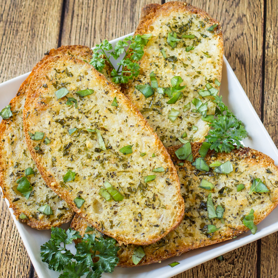

Confit Garlic & Parmesan Bread Recipe
Ingredients
- 1 loaf of crusty bread (like sourdough or baguette)
- 1/2 cup olive oil
- 1/2 cup grated Parmesan cheese
- 1 bulb garlic, cloves peeled
- Salt, to taste
- Fresh parsley, chopped (for garnish)
Instructions
- Preheat the oven to 350°F (175°C).
- In a small saucepan over low heat, combine olive oil and garlic cloves. Simmer for 20-30 minutes, until garlic is soft and tender.
- Slice the bread lengthwise and place on a baking sheet.
- Brush the garlic-infused oil over the bread slices, pressing some of the soft garlic into the bread for extra flavor.
- Sprinkle grated Parmesan cheese generously over the bread.
- Bake for 10-15 minutes, until bread is crispy and cheese is melted and golden.
- Remove from oven and garnish with fresh parsley. Serve warm.